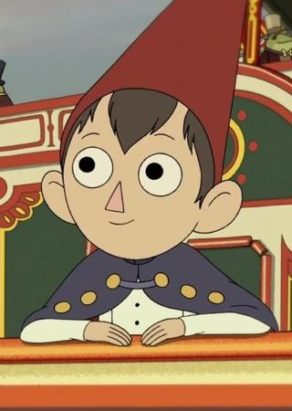

El protagonista principal de la serie, un adolescente que intenta regresar a casa lo más pronto posible.
Se encuentra en esta aventura con su hermanastro Greg, con quien entra en conflicto debido a sus diferentes
formas de ver el mundo.
Tiene un caracter pesimista, y tiende a pensar lo peor de todas las situaciones con las que se enfrentan en su aventura,
al punto que dificultan su progreso en la mayoria de ellas.
Su voz pertenece al actor de doblaje Gerardo Velazques en Hispanoamerica, y a Miguel Antelo en España